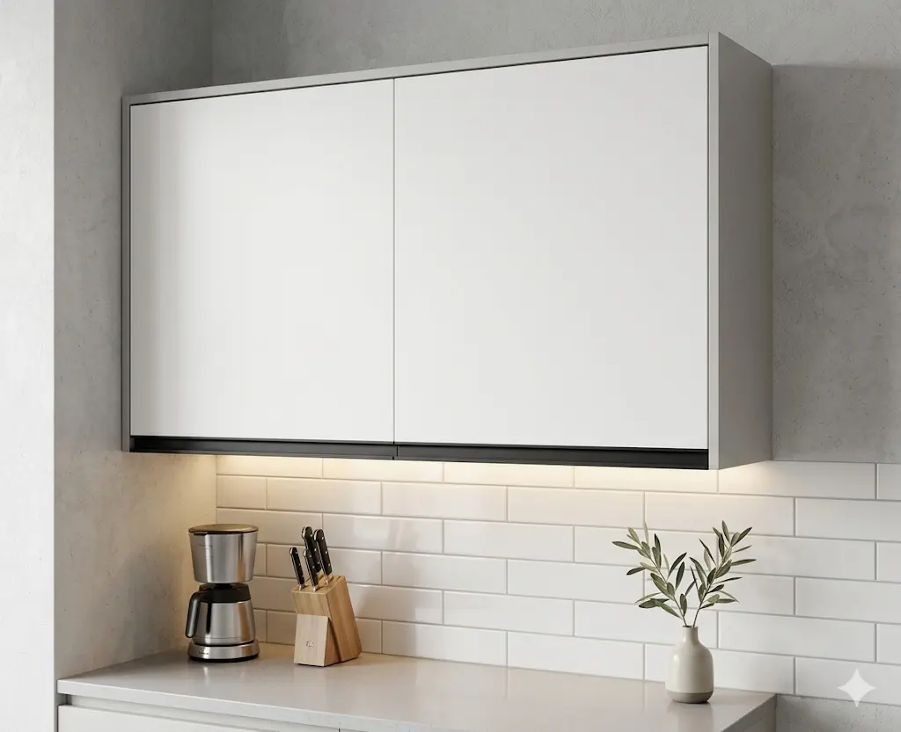
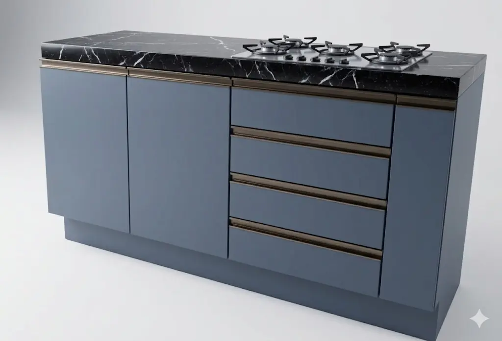
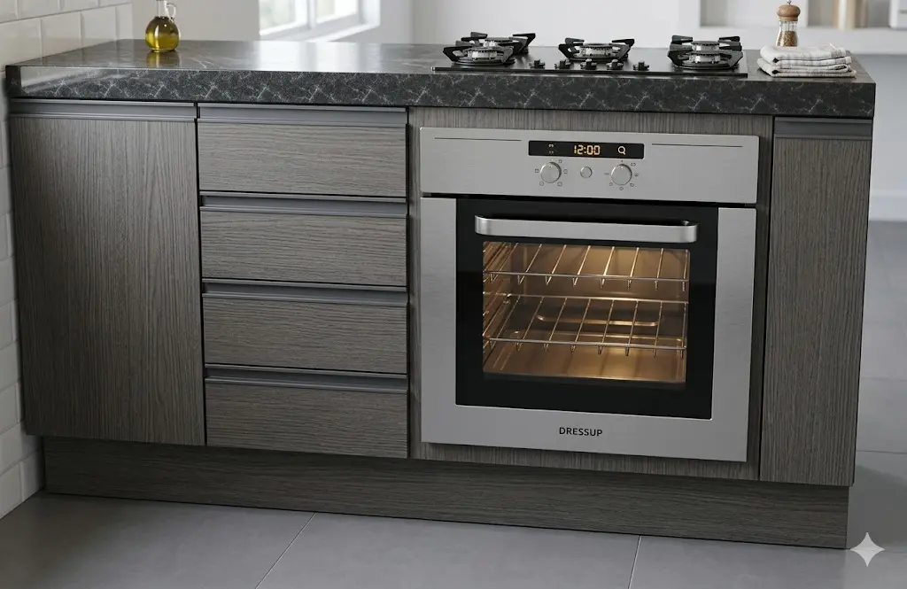
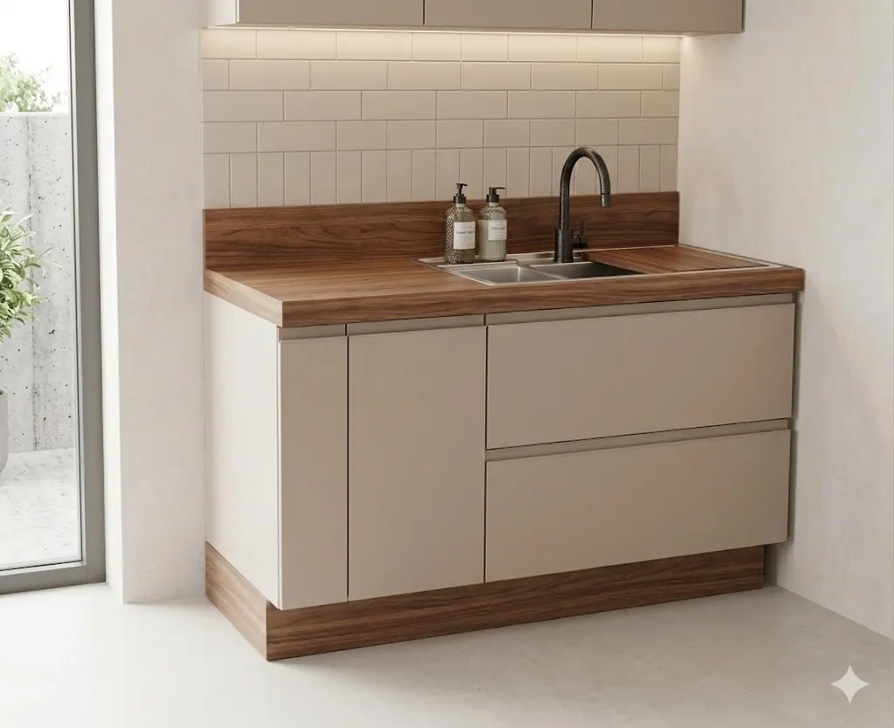

Catálogo de Módulos

Armário Aéreo Minimalista
Medidas: 0,90m (alt) x 0,90m (larg) Descrição: Armazenamento suspenso com design clean. Ideal para cozinhas ou lavanderias, este armário aéreo utiliza portas de correr e acabamento impecável para otimizar espaços verticais sem sobrecarregar o ambiente.
A partir de R$ 970 Solicitar compra
Roupeiro Slim Multiuso
Medidas: 1,00m (larg) x 2,00m (alt) Descrição: Design esguio e funcional. Este armário é a escolha perfeita para quartos menores ou closets, oferecendo prateleiras ajustáveis e portas de abertura total. Suas linhas limpas e puxadores discretos garantem um visual moderno e leve.
R$ 2.400 Solicitar compra
Bancada Gourmet com Gaveteiro
Medidas: 0,90m (alt) x 1,60m (larg) Descrição: Praticidade e estilo para sua cozinha. Esta bancada oferece uma ampla área de trabalho com gavetas profundas e trilhos telescópicos, garantindo organização para utensílios e mantimentos. O tampo resistente é ideal para o preparo de refeições diárias.
R$ 1.700 Solicitar compra
Estação de Cocção Integrada
Medidas: 0,90m (alt) x 1,60m (larg) Descrição: Otimize sua cozinha com esta estação projetada para embutir forno e cooktop. Une funcionalidade e estética, permitindo que os eletrodomésticos fiquem perfeitamente alinhados ao móvel. Uma solução moderna para quem valoriza a gastronomia em casa.
R$ 1.800 Solicitar compra
Aparador Buffet Contemporâneo
Medidas: 0,70m (alt) x 1,30m (larg) Descrição: Versatilidade para salas de estar ou jantar. Este aparador combina o aconchego do amadeirado com a leveza das portas em laca, oferecendo um espaço interno discreto e um tampo ideal para decoração ou apoio em recepções.
R$ 1.090 Solicitar compra>Solicitar compra
Balcão de Pia com Organizador de Temperos
Medidas: 1,40m (alt) x 1,05m (larg) Descrição: Inteligência em cada detalhe. Além do amplo espaço para cuba, este balcão conta com um porta-temperos lateral embutido (tipo aramado), mantendo tudo o que você precisa ao alcance das mãos durante o preparo dos alimentos.
R$ 1.750 Solicitar compra
Guarda Roupa Coméia Lateral
Medidas: 2,10m (alt) x 2,30m (larg) Descrição: Ideal para quem busca organização impecável. Este modelo conta com uma colmeia lateral exclusiva para nichos, perfeita para roupas dobradas, acessórios ou toalhas. Combina um design compacto com máxima eficiência interna, incluindo gaveteiro reforçado e cabideiro em alumínio.
R$ 5.800 Solicitar compra
Guarda Roupa Moderno Premium
Medidas: 2,50m (alt) x 3,50m (larg) Descrição: Uma peça imponente para ambientes amplos. Com um acabamento sofisticado e divisões inteligentes, este roupeiro oferece amplo espaço para cabideiros e prateleiras superiores. O design minimalista e as linhas retas garantem um visual contemporâneo e elegante para o quarto.
R$ 9.100 Solicitar compra
Torre Quente Ergonômica
Medidas: 2,30m (alt) x 0,70m (larg) Descrição: A solução definitiva para ganhar espaço na bancada. Esta torre acomoda forno e micro-ondas em uma altura ergonômica, facilitando o uso diário. Possui nichos extras para armazenamento e acabamento premium que se integra a qualquer projeto de cozinha planejada.
R$ 2.070 Solicitar compra